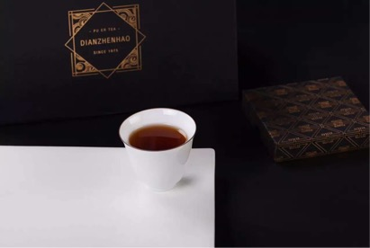

为天下人做康养好熟普
雲頂滇臻號全国招商
上承生态自然，下启健康养生
倡导健康轻养生生活方式，康养普洱雲頂滇臻號面向全国招商
茶为国饮，普洱当先
普洱茶以悠久的历史、香醇的滋味、神奇的保健功效，被誉为不需要保质期的产品、有生命的古董，在国茶中独领风骚，在世界享有盛名。
当前，随着人们对普洱茶产品认识的不断加深，普洱产业从收藏市场进入品饮消费市场，越来越多的科学研究证明普洱茶在降血脂、
降低胆固醇等方面有着独特的作用，良好的保健功效加上良好的品饮价值，让古时皇室享用的普洱贡茶，进入了平民百姓家。
生活方式改变、消费结构升级、全民健康管理时代的到来，纯生态健康普洱茶的需求将持续上升。
古树熟茶，康养有道，雲頂滇臻號
雲頂滇臻號，秉持为天下人做康养好熟普的理念，坚持原材料生长、原料采摘、原料加工、茶叶制作、包装、销售全过程零污染零添加的
生态健康特质，以特定核心产区——布朗山古树大叶种选料、科研提升古树发酵熟茶营养成分、专业生态发酵改良等精制追求，专注研制更
高品饮价值、更高营养成分含量的健康养生熟普。
雲頂滇臻號始终坚持康养品质，从最初到最终品饮，从里到外，看得见的看不见的无不精细，始终绿色健康。
品牌定位
面向所有关注健康、关心身心调和的人，提供天然原生、功效成分提升、具有健康养生保健功能的专业级古树康养熟普，打造古树发酵康养熟茶领导品牌。
- 品牌个性：优质、专业、关怀、健康
- 目标消费群体：人数众多的亚健康群体（我国亚健康人数超过9亿）；
- 时尚女性、美丽达人
- 慢性病管理需求的中老年人群
- 社交需求，送礼送健康人群（间接消费者）
- 爱茶藏茶人群
销售终端合作模式
雲頂滇臻號销售渠道以大茶产业内异类联盟、跨界异业联盟为基础，以茶体验专柜，养生领域、品味生活消费市场及服务体验集成的店中专柜形式构成。
- 雲頂家园
雲頂家园区域开发独享模式，“雲頂营销中心——雲頂家园——区域市场开拓——消费终端”垂直纵深模式，确保区域合作伙伴独享该区域渠道品牌合作开拓权，共享所在区域利润。
- 渠道品牌代理
渠道品牌代理归属区域雲頂家园开发范畴，是雲頂核心营销体系重要销售商。渠道品牌代理行业选择包括茶饮行业、康养生活市场、品质生活市场及其他目标市场重叠的可渗透行业。
- 专柜
专业设计团队针对店铺商场实地情况，提供雲頂滇臻號品牌形象专柜设计及氛围布置。
- 团购发起及团体定制
个人及团队都可以发起雲頂滇臻號的团购，享受团购服务及优惠；
团体定制，可以根据团体需求，量身定制产品包装。
- 顾问营销专员
雲頂家园运作优势
1. 团队开发优势
雲頂营销中心帮助建设团队（人员培训、货品陈列），协同区域市场开拓，主动营销，解决销售实际问题。
2. 区域利润提高
- 雲頂家园所在区域拥有渠道品牌、专柜等实体销售渠道开发权，分享下辖渠道利润分成；
- 低成本。统一定价，统一配送，不压货无保证金，在保证市场利益稳定性的同时减少合作商在储运设备上的投入，将库存降到最低度；
3. 返点奖励：完成销售任务与超额完成销售任务均有返利。
4. 经营风险降低：
- 康养产品特质，专一科研成分提升，康养顾问服务，提升客户认知度与感知度，加大市场覆盖；
- 跨界联盟，客户提纯，提升目标市场精确度；
- 资源最优配置，实行免费退换货，支持合作伙伴多样化发展，无品牌排他性。
5. 专业团队支持
- 专业熟茶团队，累积多年发酵经验，提升熟茶品质；
- 中国博士联盟专业科研，理化成分提升；
- 顶级设计团队提供鲜明特色品牌形象，陈列指导，创意物料；
- 专业营销团队，针对性品牌推广传播、活动策划支持；
- 经验丰富市场专员，辅助市场开发，拉动区域销售。

以远见，赢未来。全球财富第五波“健康保健”时代来临，雲頂滇臻號倡导康养生活，将在全国展开康养普洱营销布局，
与广大客商携手开拓普洱品饮蓝海。
了解更多招商细则，洽谈合作意向请联系：
康养熟普全国共享热线：400-0044-488
康养服务中心：0592-5990900
邮件：yundingpuer@163.com
官方网站：www.yundingchaye.com